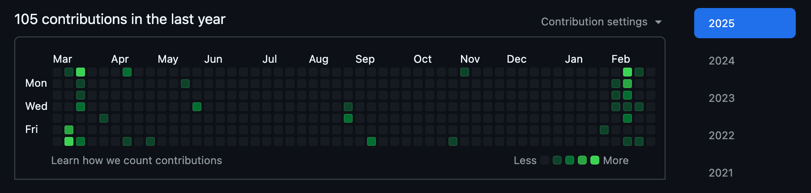

hey, it’s been a while. shortly after my first (and last) post, i started working as a mobile developer at TikTok. i’m still there, but i’m gearing up to do a postgraduate degree at ANU focusing on PL theory/formal verification.
motivation
why did i start writing?
when i made the blog at the beginning of 2024, i was driven by a few things:
- i was having fun with my side projects and wanted to write about my experiences as a form of documentation, both for my future self and for my career.
- it was fun hacking with hakyll, the site generator that i used to create the website.
- i had an existential realisation that i had no written record of who i was/had been for a very long time, and i figured one way to start such a record was through a blog.
i think it’s pretty easy looking back to see how my drive fell apart quickly. the source of motivation was either bound to be short-lived (shiny new thing) or vague enough that it fell apart the moment it was tested. nevertheless, let’s explore those tests.
why did i stop?
again, i have a few answers:
- i don’t have much to offer my (nonexistent) readership in terms of original, interesting content. i know it’s a silly headspace to be in. but generally when i get to writing about some technical project, i have attained enough fluency with what i want to write about to “see” how trivial it is and so find my writing about it to be inane and uninspired.
- i find the process of writing to be pretty paralysing. after finishing each sentence, i have a compulsion to go back and edit the wording to something that aesthetically appeals to me. giving into that compulsion leads to me getting stuck and finally convincing myself that i suck at writing (i do, but that’s what gets me to stop in times like these).
- like i said at the start, i started a job very shortly after and found myself pretty busy with that. i also had a reasonably involved wrist surgery that kept me from typing too long.
why am i back?
in preparation for the postgrad, i’ve worked through 3-ish textbooks without writing a single thought down. i know this now to be the wrong way to approach self-study.
this time around, i have the concrete goal of writing about technical things that i’m currently tackling. we’ll see if the scope expands, but i want to be clear going in that that’s what the blog is about. in this way, i don’t need to worry about my readership’s expectations for “original” content. instead, the focus will be on the clarity of the technical prose, hopefully thereby ironing out my misunderstandings/knowledge gaps.
i’m going to be purposefully light on editing the aesthetic element of the writing. i want to free myself from my expectations.
i also want to lower my idea of what constitutes an interesting enough idea to write about. i’m thinking that maybe i’ll start a devlog-y thing for the current textbook i’m reading.
and about my job, things are still pretty hectic but i’m making do.
what have i been up to?
so i’ve said already that i read 3-ish textbooks. those were:
- Logical Foundations
- Programming Language Foundations
- i finished the above two along with 95% of their exercises. they are such good learning material. having formal theorems, definitions, and proofs being so easily scrutinised and interacted with is so useful.
- Types and Programming Languages
- this book has a large crossover with the previous two, covering largely the same content up until around halfway through when more complex type systems are discussed. i didn’t make it much further than the content of PLF before hitting a particularly busy patch of real-life work and losing the motivation to continue.
- Introduction to the Theory of Computation (i couldn’t find an official website so linked is the goodreads)
- i didn’t make it very far with this one either, admittedly. around a quarter of the way through i lost motivation in much the same way i did for TAPL. i do mean to come back.
- Crafting Interpreters
- i’m working through this now, around 3/4 of the way through. specifically, i’m implementing a mirror image of the book’s implementation in haskell. it gives me much the same feeling PLF and LF did, reading a bit of prose and then hacking away with the concept. it’s been really fun.
i rewrote the parser that i wrote about in my first blog after reading a very illuminating paper recommended in a reddit comment.
i made a small utility for timing wallpaper changes/notifications early last year according to a pomodoro/repeating cycle. it was a fun and self-contained project for exploring async Rust, which for this use-case was really very ergonomic.
and… not a whole lot else, technically. i mean, look at my github contribution history:

yikes!
anyway, i hope i manage to stick with this.